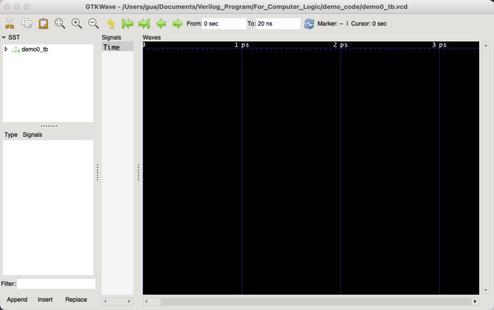
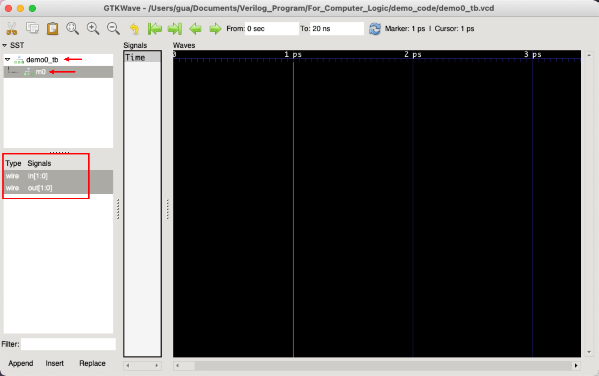
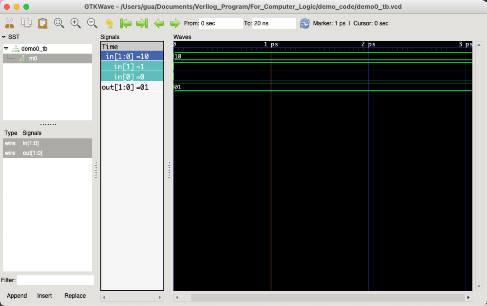
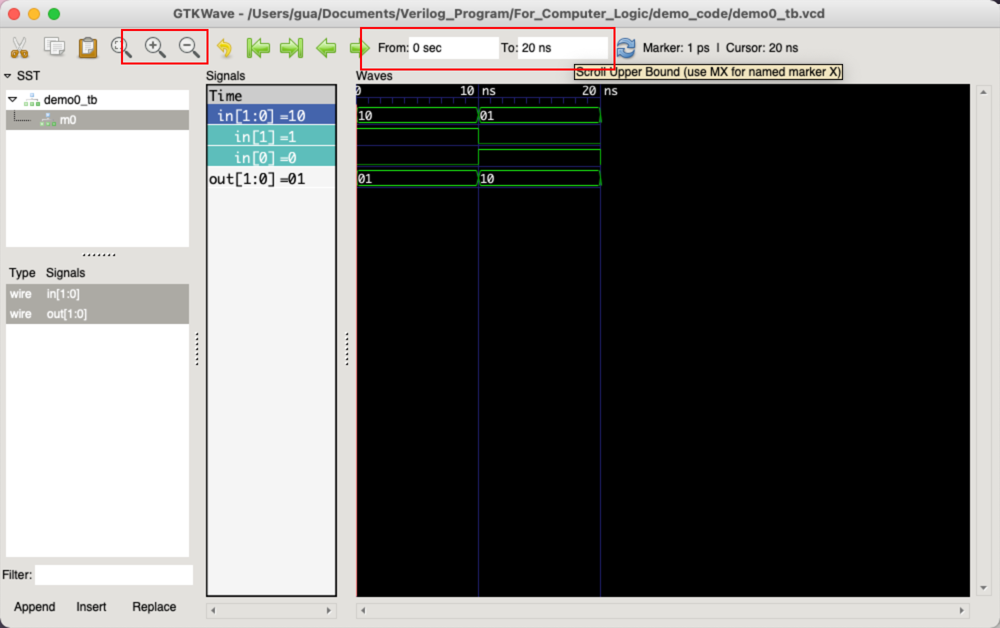
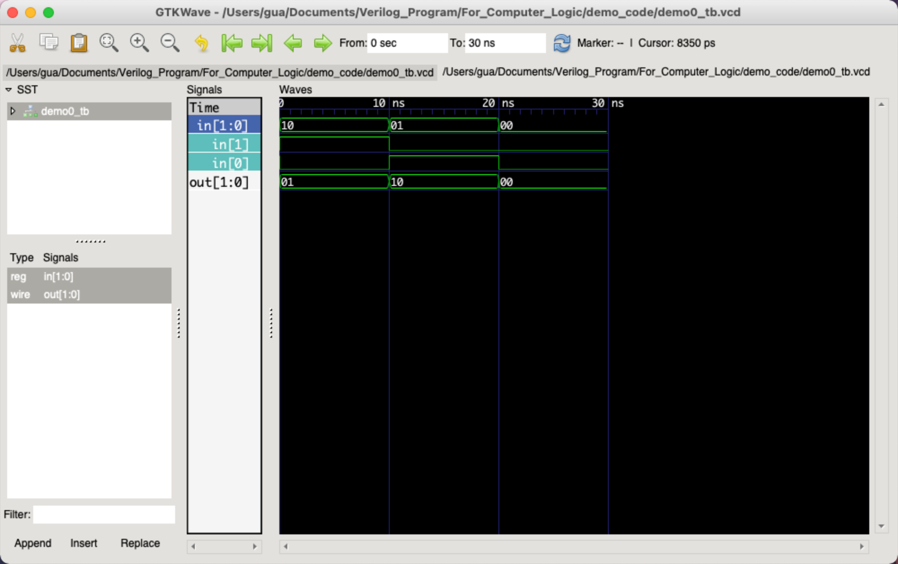
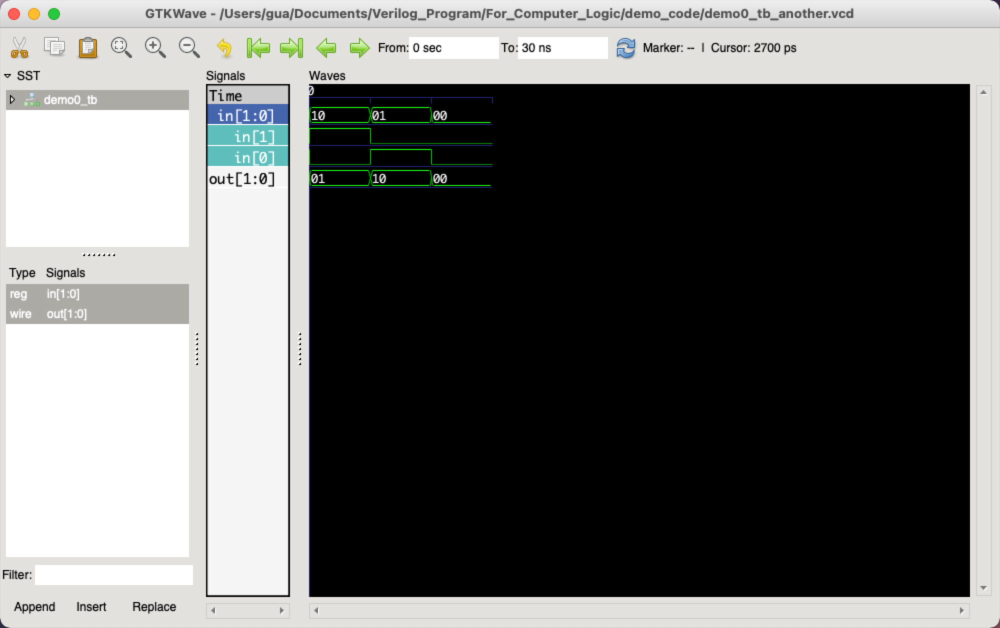

Verilog 仿真(Linux/macOS)
主要是给数逻时没有 Windows 本的同学，对计组实验来说帮助不大（无法使用 IP Core）
Verilog 仿真是判断模块功能是否正常的重要一步。如何写仿真文件请阅读 First_Look_at_Verilog ，本文档仅展示 MacOS 和 Linux 环境下的 Verilog 仿真（使用 iverilog 及 gtkwave）。
iverilog
Icarus Verilog 是 Verilog 硬件描述语言的实验工具之一， 你可以进入官网了解更多。
你可以使用包管理简单的安装，比如：
sudo apt-get install iverilog # on Debian or Ubuntu
yum install iverilog # on CentOS
brew install icarus-verilog # on MacOS with homebrew
请根据你的平台进行调整。如果你更倾向于使用源码自行编译，请参考这个网站找到合适的安装指导。
gtkwave
对于 macOS Sonoma 14 版本
官网 gtkwave 并不支持，可以参考 issue 中的回复，使用 mac port 安装，或使用 brew 安装其他用户提供的修改版本：
gtkwave 可用于查看 VCD 波形文件，你可以进入官网了解更多并可在官网下载安装对应版本。
How to use
先以一个简单的例子给出过程。
这是一个将输入两位倒置的简单模块。
// tb for *testbench*
`timescale 1ns/1ps
`include "demo0.v"
module demo0_tb;
reg[1:0] in;
wire[1:0] out;
reverse m0(in, out);
initial begin
$dumpfile("demo0_tb.vcd");
$dumpvars(0, demo0_tb);
in = 2'b10;
#10; in = 2'b01;
#10; in = 2'b00;
end
endmodule
你可能会发现 testbench 代码中有两行代码并不是很理解
我们之后会进行讨论，现在先进行步骤演示。
Step1
Compile & Run
-o参数用于对输出文件命名，默认命名为a.out。
vvp 是用于执行 Icarus Verilog 默认编译形式的 runtime engine，即使用 vvp 来执行 iverilog 生成的输出文件。
通过上述过程，我们获得了 demo0_tb.vcd，这里储存着我们希望得到的波形信息。
Step2
打开 gtkwave，你可以使用 open -a gtkwave 来打开（当然双击应用图标也可以）。
File -> Open New Tab 并选择刚才得到的 .vcd 文件。你将看到如下界面

我们需要在左侧SST中选择仿真文件demo0_tb进而选择我们用于仿真的模块m0（不理解分别是什么名称可以返回testbench代码对照查看）。可以看到下边这样的界面

红框部分即为模块m0中的所有信号，我们可以选择想看的信号，长按Crtl或Command键并单击可以一次选择多个信号，选择完信号后，点击图中左下角的Append即可将信号波形展示出来，如下图：

对于一个向量我们可以双击进行展开（如图中in信号），这里由于单位时间所占长度过长，我们得不到有效的信息，可以点击上栏的放大镜进行放大或缩小。我们发现，0-20ns的时间范围不足以得到我们想要的全部信号，如下

笔者未能找到更方便改变时间范围的方法，解决办法是在最后的仿真命令后添加了新的#10，即改为：
initial begin
$dumpfile("demo0_tb.vcd");
$dumpvars(0, demo0_tb);
in = 2'b10;
#10; in = 2'b01;
#10; in = 2'b00;
#10; // Changed Here!
end
这时我们得到了希望看到的全部波形。（如有更好的方式，烦请联系 guahao@zju.edu.cn ，非常希望得到您的建议！)

一些解释
testbench中新东西是什么？
首先给出两个参考网站， FAQ_Icarus Verilog， Reference Designer。
$ 通常用来表示内置函数。
$dumpfile("filename.vcd"); 将 nets 与 regs 的变化写入 filename.vcd 中， VCD 即 value change dump。在一个模拟中，我们只能有至多一个 $dumpfile。
$dumpfile 指定了我们将dump得到的信息存储到哪里，而 $dumpvars 规定了我们希望存储什么信息。它的引用形式较多，我们分点表示
$dumpvars，这是最简单的形式，他表示我们希望得到所有信号的变化$dumpvars(<level>, <, <module_or_variable>>)-
<, <module_or_variable>>规定了我们希望看的模块名，可以选择多个模块或变量，比如$dumpvars(1, top_module, another_module) <level>表示级别，0表示本模块和本模块所引用的所有模块中的所有变量，比如top_module下有a_module，那么$dumpvars(0, top_module)会将top_module和a_module中所有变量的变化记录下来；1表示仅本模块中的所有变量，在上边的例子$dumpvars(1, top_module)仅记录top_module的变量而不记录a_module；2及以上的从未见过，有兴趣的同学可自行查阅。
include or not?
因为例子中直接将 module reverse 通过 include 引入到了测试文件中，我们在编译的时候并没有将reverse所在的 demo0.v 一同写出，如果未通过 include 方式，则在 iverilog 编译时要给出相应的 .v 文件（类比c的编译）。比如
`timescale 1ns/1ps
module demo0_tb;
reg[1:0] in;
wire[1:0] out;
reverse m0(in, out);
initial begin
$dumpfile("demo0_tb_another.vcd");
$dumpvars(0, demo0_tb);
in = 2'b10;
#10; in = 2'b01;
#10; in = 2'b00;
#10;
end
endmodule
与 demo0_tb.v 仅减少了 include 同时改变了file名，同时 demo0.v 未做改变。
我们可以得到完全一致的结果。更多参数和使用方法可以查看iverilog手册 man iverilog 或官网手册。

如果你只想用CLI
如果gtkwave无法满足你只使用CLI来完成所有任务的要求，你可以使用 yne/vcd。请参考他的项目主页完成安装并尝试使用。